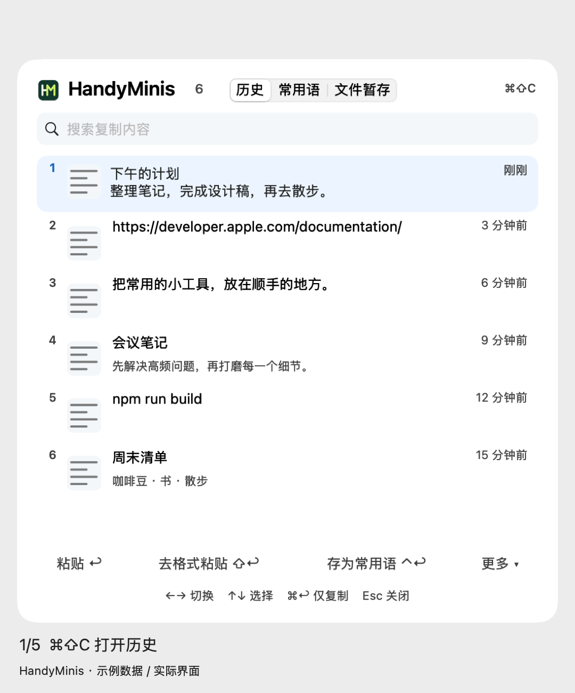
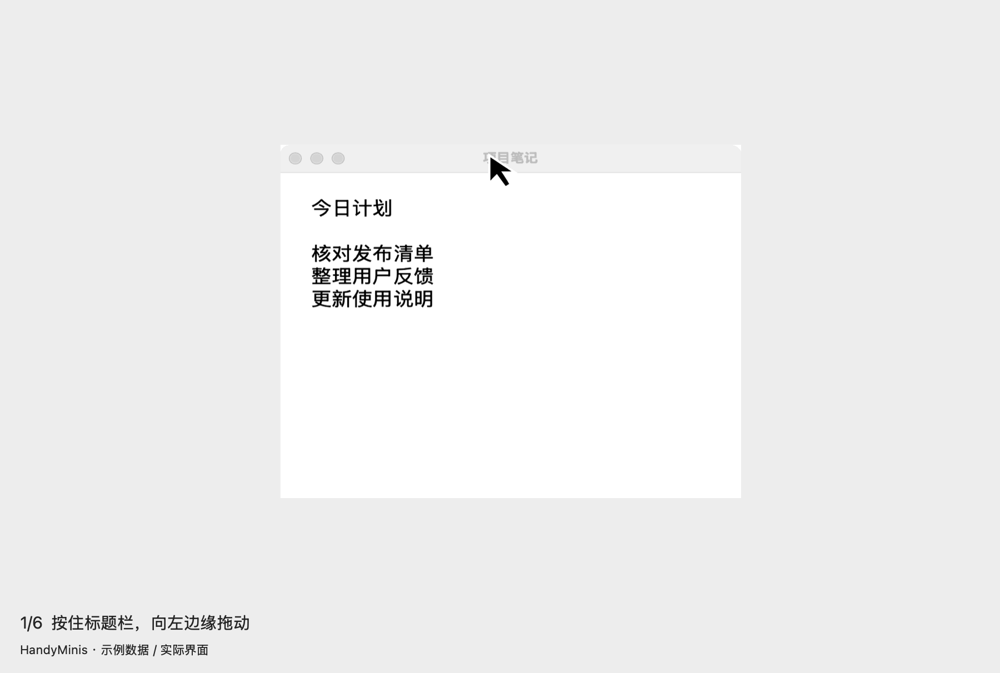

DeskKit for macOS
DeskKit 是一款 macOS 菜单栏工具，可以给截图打码并在本机识别中英文、找回剪贴板历史，也能拖拽整理窗口。
截图、打码和文字识别
用 ⌃⌘A 框选截图，添加箭头、马赛克或实心遮挡，再复制识别出的文字。

剪贴板历史
用 ⌘⇧C 查看最近复制的文本、图片和文件，搜索后按回车粘贴。

拖拽整理窗口
在设置中开启后，把窗口拖到屏幕边缘或四角，预览半屏或四分之一布局并松手贴靠。

开发版新增功能
以下功能已在开发版中实现。当前 GitHub 下载版为 v1.0.3。
- 常用语。把历史中的文本存为带名称的短语，需要时搜索并粘贴。
- 纯文本粘贴与清理。按 ⇧↵ 去掉格式后粘贴，也可从条目菜单清理多余空格、去掉折行或合并成一行。
- 文件暂存。把文件拖进暂存区，或从剪贴板历史加入，再拖到目标应用。
- 保存和恢复窗口布局。在菜单栏选择「窗口布局 → 保存当前布局…」，记录当前桌面的窗口位置和大小。再次打开对应窗口后，从同一菜单选择布局名称恢复。
安装和权限
需要 macOS 14 或更新版本，支持 Apple 芯片和 Intel Mac。下载 DMG 后将 DeskKit 拖入「应用程序」，从菜单栏的 DK 图标打开设置。
截图需要屏幕录制权限。自动粘贴和窗口贴靠需要辅助功能权限。安装与首次打开说明见 GitHub README。